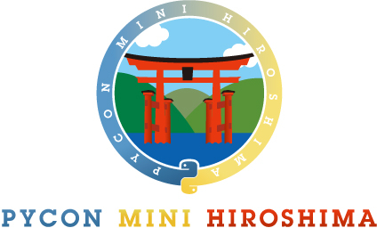

テーマ「○○とPython」
2015年11月22日（日曜）
受付開始：9時30分 / 開始：10時00分 / 終了：17時00分
会場：サテライトキャンパスひろしま 502講義室
（広島県民文化センター）
広島市中区大手町1丁目5-3
終了後、別会場にて懇親会を行います
受付開始：9時30分 / 開始：10時00分 / 終了：17時00分
会場：サテライトキャンパスひろしま 502講義室
（広島県民文化センター）
広島市中区大手町1丁目5-3
終了後、別会場にて懇親会を行います
プログラミング言語 Python をこれから学びたい初心者から中級者
Python を使ってなにか面白いことをしたい人
Python の使い方や関連技術をみんなに紹介したい人
広島地域でこれから Python コミュニティを一緒に盛り上げてくれる人、など
PyCon とはオープンソースのプログラミング言語 Python （パイソン）に関する国際会議・カンファレンスで、世界各国のコミュニティによって各地で開催されています。
Python はシンプルで、覚えやすく、使いやすいプログラミング言語です。
現在では、趣味のプログラミングからプロフェッショナルなシステム開発まで、サーバーでもクライアントでも、学術分野でも、 多くの分野でごく当たり前に利用される、人気のプログラミング言語になっています。
日本では2011年に PyCon mini JP が初めて開催され、その後は PyCon JP または PyCon APAC （アジア太平洋地域）として規模を拡大しながら毎年開催されています。2015年9月には日本最初の地域 PyCon mini イベントが札幌で開催されました。
PyCon mini Hiroshima は広島地域で開催する PyCon mini イベントです。
初めての開催である PyCon mini Hiroshima 2015 は Python と関連の深いデータベース開発者のコミュニティ、オープンソースのスクリーンリーダー NVDA の関係者などを中心に実施します。
主催：PyCon mini Hiroshima 2015 実行委員会
対象：Python 初心者から中級者
Python歴20年以上の古株ユーザ。日本のPythonメーリングリストの設立や、python.jpサイトの立ち上げなどを行う。著書に「パーフェクトPython(技術評論社)」,「Python文法詳解(オライリー・ジャパン)」,「Pythonライブラリ厳選レシピ(技術評論社)」など。
○○にはあなたが伝えたい想い、プロダクト、コミュニティを入れてください。 その○○とPythonの繋がりをテーマに登壇してくれる方を募集します。
例: PostgreSQLとPython、PHPとPython、科学計算とPython、WebとPython、ゲームとPython、など
Pythonは多種多様な場所で使われており、その多様性が一つの特徴です。 今回の PyCon mini Hiroshima ではその多様性をお伝えしたいと考えています。 あなたにとっての Python を伝えていただけるご応募をお待ちしています。
LT発表申し込み受付中です。 connpass 参加申し込みのアンケート、connpass イベントへのお問い合わせ、または後述のお問い合わせ先メールアドレスにて、希望テーマをお知らせください。
PyCon mini Hiroshima 2015 の実行委員長（西本＝広島在住）は、
オープンソースのスクリーンリーダー（視覚障害者が利用する画面読み上げソフト）のコミュニティ NVDA 日本語チームとして活動し、
グローバルな NVDA 開発への参加、日本語関連の機能拡張版のリリースを続けています。
NVDA の実装には Python が使われています。
今回は NVDA にできること、NVDA で経験した Python 開発の思い出を紹介しながら、
「アクセシビリティ」の意義と奥深さをお伝えしたいと思います。
PostgreSQLとPython。
一見すると全く関係ないように思えるこの2つには色んなところで密接に関係しています。
Pythonからデータを保存するためのPostgreSQLとしての機能以外も含めてお話します。
・DjangoとPostgreSQL
・PL/Python
・FDWとPython
PostgreSQLとPythonの魅力を余すこと無くお伝えします！！
Pythonはプログラミング初心者の入門に適した言語だと言われることがあります。
そのPythonを実際に新人教育用の言語として採用したときのことをお話しします。
私の勤めていた会社ではPythonを業務で利用する機会はほとんどないため、言語の使い方を覚えてもらおうというよりは、プログラミングの基礎をしっかり理解してもらいたいという願いからPythonを採用しました。
ではその結果、ほかの言語を採用したときと比べて、教育の進め方にどのような違いがあったのでしょうか？
ほとんどプログラミングの経験がない新人さんたちは、どのようにPythonを、プログラミングを理解していったのでしょうか？
実際の業務でPython以外の言語に触れたとき、彼／彼女らはどのように2つ目の言語を身に着けていったのでしょうか？
そんな新人教育の事例をご紹介します。
PythonのドキュメーテンションツールであるSphinxを使用して作成したサイトを、GitHub PagesやBitbucket Pages、Read the Docsで公開する方法について紹介します。
それぞれの利点や注意する点などについても紹介できればと思います。
PythonでWebスクレイピングを行う場合には、複数のアプローチが存在します。本セッションでは、はじめにWebスクレイピングの概要を説明します。次に実際の例として、標準ライブラリ、サードパーティ製ライブラリ、また本格的なスクレイピングのフレームワークを使用した場合を取り上げ、それぞれの使い方や特徴についてお話します。
PythonでWebシステムを開発している時もありました。
最近は個人レベルでGoを触っています。
そんな私は今回「GoとPython」というテーマで両言語を比較してお互いの特徴や違いを知って頂こうと思っております。
やさしい内容となっておりますので、お気軽にどうぞ。
PyCon mini Hiroshima は視覚や聴覚に障害をお持ちのかたを含めて、 誰にでも参加して楽しんでいただけるイベントを目指しています。
点字資料提供、手話通訳、要約筆記、会場への誘導などの実施予定はありませんが、 会場内の移動支援、アクセシブルな電子データ提供、 参加者持参のモバイル機器を使う情報保障など、 事前にご要望があれば、運営側からご提案させていただきます。 特別な配慮を希望されるかたは参加お申し込み時にお知らせください。
参加者からの情報保障のご要望にお応えするために、 発表者のかたには（簡単に御対応いただける範囲で） 運営側からご配慮・ご協力をお願いすることがあります。 ご理解いただければ幸いです。